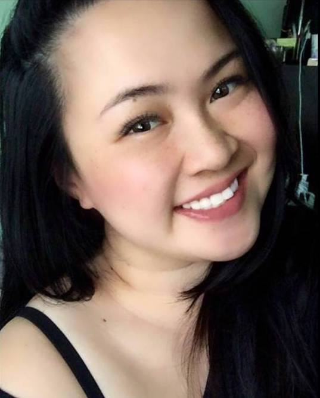

Connect with Me


About Me
 Hi, I'm Jessie! I am currently a student of University of California Berkeley - Extension. I am a San Francisco native. My past professional roles have included Avation, Education, and Customer Service.
Other's would describe me as witty, comedic, and "extra" (aka over-achiever). I have always had the passion to be creative in many different forms. I enjoy traveling and exploring different cultures. Other than web development, another passion of mine is Culinary Arts.